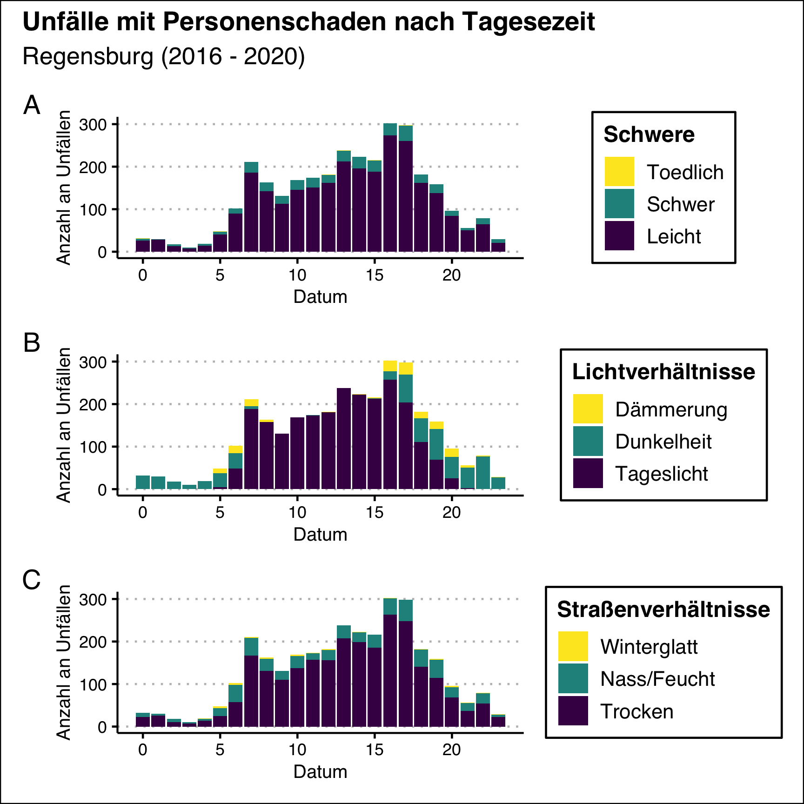

5 Auswertung
Zur besseren Lesbarkeit wird der R Code in diesem Kapitel nicht gezeigt. Dieser besteht größtenteils aus Plots und ist bis auf wenige Ausnahmen nicht weiter relevant.
Im Stadtgebiet Regensburg geschahen von den Jahren 2016 bis 2020 insgesamt 3167 Unfälle mit Personenschaden. Abbildung 1 zeigt die monatlichen Unfälle in diesem Zeitraum.
Abbildung 1: Monatliche Unfälle in Regensburg.
Während sich kein eindeutiger Auf- oder Abwärtstrend feststellen lässt, zeigen die Daten dennoch eine Jährliche Periodizität: Im Sommer finden die meisten Unfälle mit Personenschaden statt, während die Anzahl der Unfälle von Herbst bis Frühjahr sinkt.
Abbildung 2 zeigt die Anzahl der jährlichen Unfälle in Regensburg. Im Jahr 2020 zeigt sich ein Rückgang von 25%. Dieser könnte auf geringeren Verkehr aufgrund der Corona Pandemie zurückgeführt werden. Dies wird durch Abbildung 3 verdeutlicht: Alle dokumentierten Verkehrsmittel hatten einen Rückgang der jährlichen Unfälle von 2019 bis 2020.

Abbildung 2: Jährliche Unfälle mit Personenschaden.
Abbildung 3 zeigt zudem, dass sich die Anzahl der Unfälle aller Verkehrsmittel außer Fahrrad auf einem fallenden Trend befinden. Die Anzahl der Unfälle mit Fahrradbeteiligung dagegen stieg bis 2020 kontinuierlich an.

Abbildung 3: Jährliche Unfälle mit Personenschaden nach Verkehrsteilnehmer unterteilt.
Der wichtigste Faktor, der die Unfälle unterscheidet, ist die Schwere der schlimmsten Verletzung (Leicht, Schwer, Tödlich). Ungefähr 87% Unfälle gehen mit höchstens leichten Verletzungen aus. Lediglich 0% der Unfälle enden tödlich.
5.1 Unfälle nach Monat
Abbildung @reg(fig:unfaelle-monthly) zeigt die monatliche Verteilung der dokumentierten Unfälle. Es lässt sich ablesen, dass die Anzahl der Unfälle vom Winter bis Sommer ansteigt und in Juli ein Maximum annimmt. Mit dem Beginn der Sommerferien in Bayern im August sinkt die Anzahlt der Unfälle dann um 36%.

Die Schwere der Unfälle unterscheidet sich zwischen den Jahreszeiten kaum.
5.2 Unfälle nach Uhrzeit
Die meisten Unfälle mit personenschade finden tagsüber statt. Zusätzlich zeigt Abbildung ?? zwei Peaks: Um sieben Uhr und von 16-17 Uhr. Diese stimmen mit dem Arbeitsverkehr überein.
Abbildung ?? zeigt auch, dass Unfälle bei Dunkelheit zwischen 16 und 6 Uhr stattfinden. Das ist keine überraschende Erkenntnis, stärkt aber das Vertrauen in die Zuverlässigkeit der Daten.

5.3 Unfälle nach Ortsteil
5.3.1 Absolute Anzahl

5.3.2 Pro Quadratkilometer